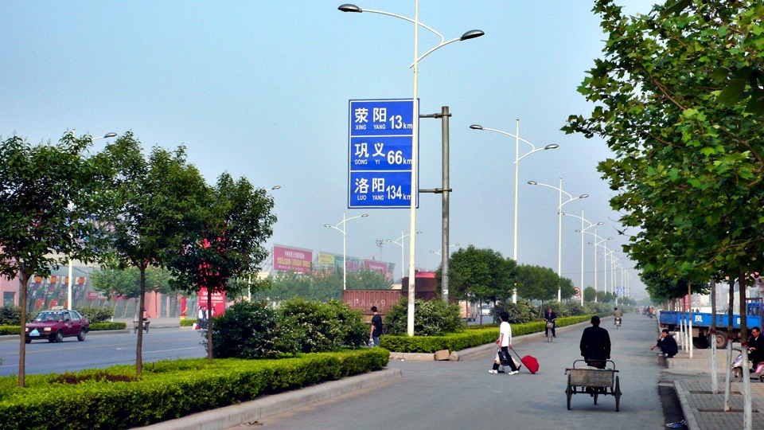
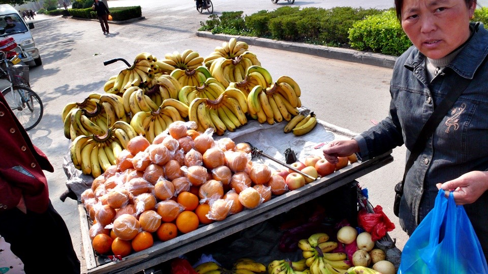
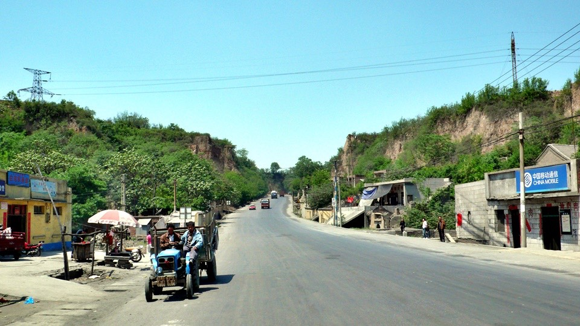
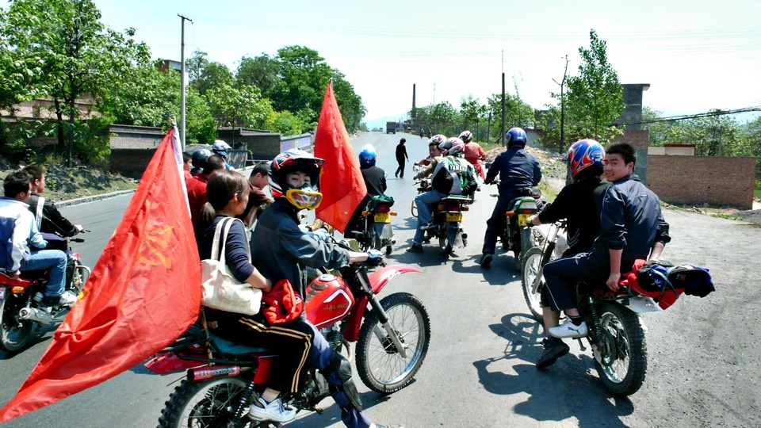
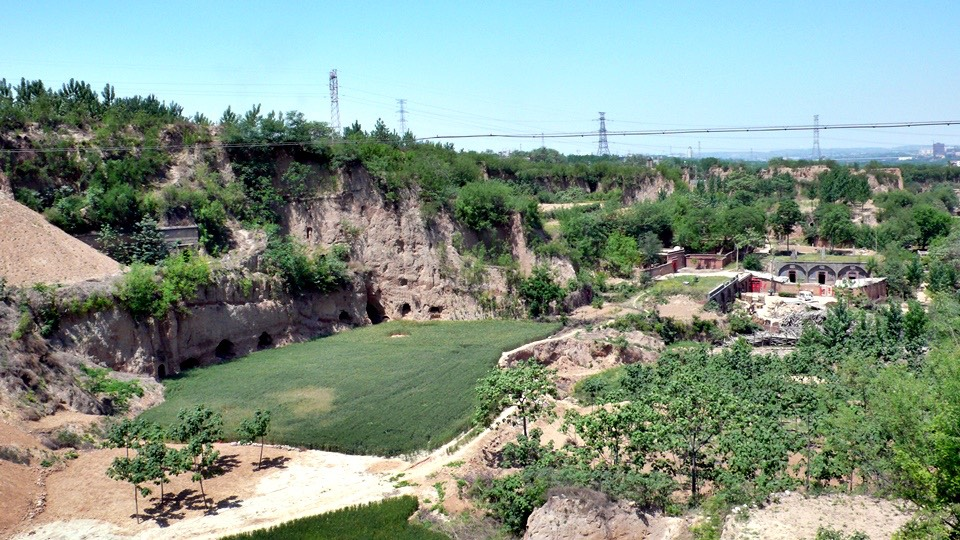
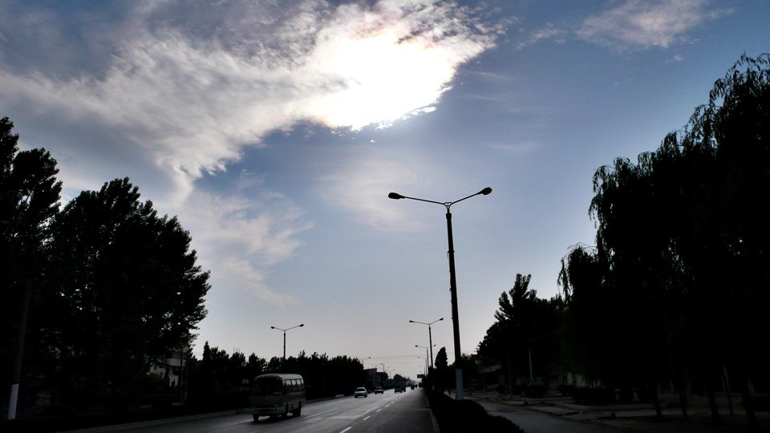
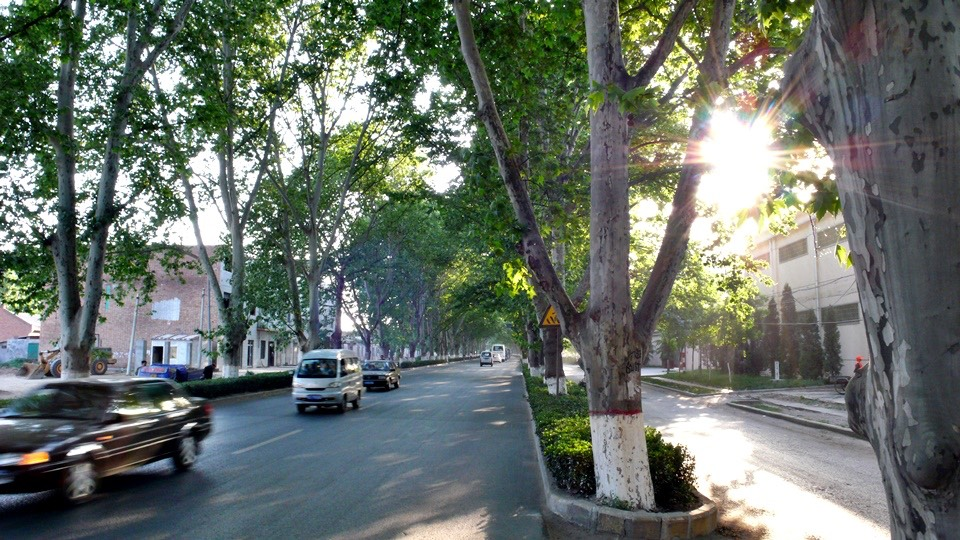

Again, I had breakfast at the “Worry-free Breakfast Food Stall”. Being there a second day,
I already felt like a regular. Today I ordered bean curd and decocted buns (6 for only 1 RMB).
The owner’s wife asked me if I wanted my bean curd sweet or salty.
I said “sweet” three times in a row, but all three times she heard me say salty.
So you can see how hard it is trying to communicate with an Henan accent ~_~
I started riding today, but forgetting to fill all three water bottles, I’m riding without any water.
My plan was to ride 134 km west to Luoyang.
I thought I would make this distance by around 3pm, but who would have thought…I got lost again!

When I did arrive at Luoyang after a 50 km detour, I was glad I finally made it.
What happened was that on the way, I started to get thirsty around 9 am,
so I bought three catties of bananas - the cost was 6 RMB for 10+ bananas!

Maybe because I was born in the year of the monkey, those bananas were just right for me.
After having ten bananas one after the other, my thirst was finally stopped.
I rode another 80 km along Route 310 still without water. There were some up and down hills on the way, but nothing too difficult.
After that I really got thirsty.
Not even bananas seem appealing any more, so I ran into the first grocery store in sight to get some beverages.
I found a super size bottle of Sprite (2.5 lit), and this time it was really manufactured by the Coca-cola company.
After filling up all three of my bottles with Sprite, I borrowed the freezer where they kept their ice cream to cool the Sprite.
Then I drank whatever was left in the 2.5 lit bottle. Without water I had Sprite; that doesn’t sound too bad, does it?
While waiting for my Sprite to get cool, the sudden need of a sugar popsicle appeared, so I got two (5 cents each).
In the shade I enjoyed this rare moment of coolness.
Putting the Sprite in my water bottles was what I thought was a good plan,
for not only could that save space, but also provide me with a supply of drinks for the rest of the afternoon.
But what happened was, all the carbonation was gone in half an hour, and what was left was only sugar water.
To add to that the coolness disappeared almost as soon as I put the bottles on my bike! Now all I had was this warm sugar water.
How does that sound for ‘not too bad’? ~_~
To make things worse the water bottles became sticky and gooey, and that took forever to clean.
As I was moving steadily on Route 310, I was sure Luoyang was right in front of me,
but whenever I came to a crossroad I still couldn’t stop the urge to ask someone if I was on the right path.
Sure enough there was this bald man who told me that since I’m riding a bike it would be faster if I went another way.
He pointed toward a way different from the sign that said Luoyang, and I believed him.
Why take the long way when there’s a short one.

Actually the bald man was right, but I still got lost.
Before knowing it, I was in the mountains and climbing a hill again.
Although that way had my compass showing that I was going south when I should have been going west,
I thought that if I just kept on riding, eventually I'd come to the right road.
Then there were these young people who looked like free-wheeling riders,
who had flags on the back of their motorcycles.

When I first saw them they were just resting in front of a store.
But when they saw me they got up and started their motorcycles, and soon they were all around me asking where I was heading.
I told them Luoyang, and asked if this road would lead me there.
They all laughed, because they just came from Luoyang.
Luoyang was in the opposite direction, and I had to turn back.
I was still reluctant to give up, so I asked if there was any chance that this road would lead to Luoyang.
The answer was NO, and I’d end up back in Zhengzhou if I kept on riding.
I felt like a great fool for getting lost once again.
So I turned back. Fortunately the way I came was all up hill, it didn’t take long for me to get back to a town.

The first thing in my mind was to get a stick of pineapple and ask which way would lead me to Luoyang.
The man said that the way I had just come was the way to Luoyang.
I'd have to turn back AGAIN. T_T
It felt as if I was riding the same road back and forth all day.
I found out because I rode too far down the hill, I'd have to climb back up again.
This should have been a short cut but it ended up to be an extra 50 km on my odometer.
At last I got back on Route 310. Another 70 km and I’d be in Luoyang.
It was already 3pm by then and I was heading west into the sun.
The sun was right in my face, and this was definitely sun lotion time.

Just before entering Luoyang, there was this really long tunnel of trees.
Riding through this endless green tunnel makes you feel as if you were on a treadmill, moving with no progress.
But that's just an illusion, and at about 6pm I finally arrived at the ancient city of Luoyang.

First things first, I had to find somewhere to stay.
A pedestrian gave me a direction and I went to check it out.
It was the luxurious Luoyang Hotel.
Just to see how much it would cost for staying a night, the clerk said 200~300 RMB. I got out of there as soon as I could.
While looking for some other place to stay, I met an old lady with her bicycle.
There was this Persian dog (a Persian cat-like dog) in the basket of the bike.
She came up to me and asked: “Where are you heading?” as if we were old friends.
She didn’t ask me all the questions I got so tired answering, but cut right to the core.
I said I was looking for a cheap place to stay.
And thanks to this old lady I found Xin Xin Hotel.
Just while I was about to carry my bike up to the second floor to ask about the price,
there was a girl at the door talking on her cell phone in Cantonese.
Seeing me coming in, she ended her phone call in a hurry and asked me if I was looking for a room. I said yes, and asked how much it would be.
‘There are more expensive rooms and cheaper ones, which would you like?’ she said.
I said I wanted the cheapest.
What I got was a room with only a bed and a trash can for 20 RMB a night.
I was two days ahead of schedule so I planned to spend an extra day in Luoyang sight-seeing,
and for staying two nights it was 5 RMB off, so it only cost me 15 RMB for the second night.
For dinner I had the pack of instant noodles I bought from Mario the first day.
After riding ten days with it in my sack, it felt great to finally get rid of it.
Now I could get something new to keep as supply.
The need for tissue was greater then I had expected.
I had been picking up a piece here and there in restaurants and hotels along the way, but that wouldn’t do.
So I went to the grocery store and got a whole roll for 1 RMB.
Now I could finally blow my nose whenever I needed to without worrying about needing to use the same piece again. XD
When I went to wash my clothes and get a shower, I met a young man who was also traveling.
He had already gone through half of China.
After asking him for information, I decided to go to old Luoyang and the White Horse Temple the next day.
That should be fun～*^^*
The people at the hotel said that Luoyang was a pretty big city and advised me to get a map of the city.
Actually after getting lost today, once I leave the hotel I’m a little afraid that I might not be able to find my way back.
After riding 180 km today, I guess I deserved a break!!
After all, how often does a man get to come to Luoyang?